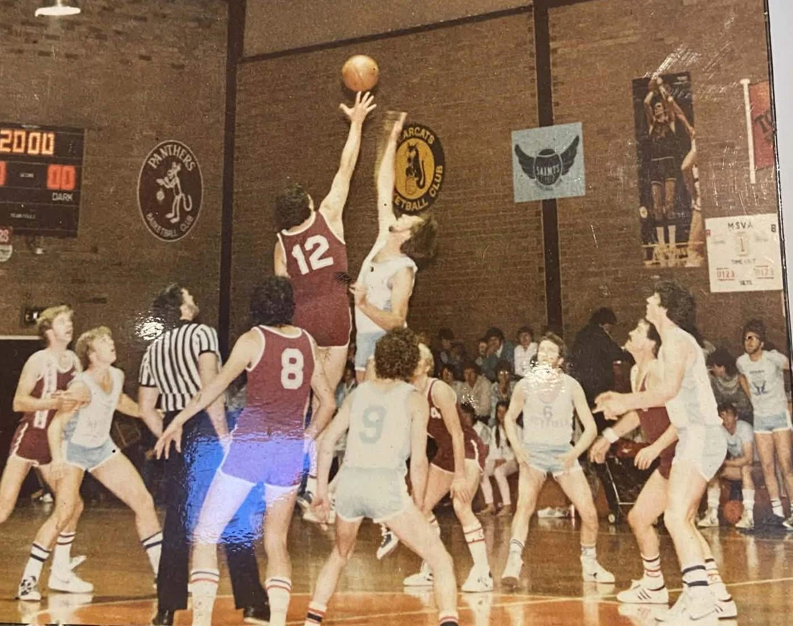

Heyfield team portrait
Players and staff pictured with a Gippsland Basketball League award.
GIPPSLAND BASKETBALL LEAGUE
The teams, the rivalries and the people who filled Gippsland’s basketball courts in the 1980s.
THE COLLECTION
Players and staff pictured with a Gippsland Basketball League award.
Leanne Pleydell shoots as Sale captain Jenny Harrington defends at the country championships.
The scoresheet settled a two-point result between Sale and Traralgon.
No items match your search.

OUR STORY
The GBL 80s Story brings together photographs, newspaper clippings and memorabilia from the league’s East and West divisions. It records the women’s and men’s competitions and the contributions of coaches, officials and volunteers who kept them going.